Secure agent workflows in GitHub Copilot with NVIDIA OpenShell
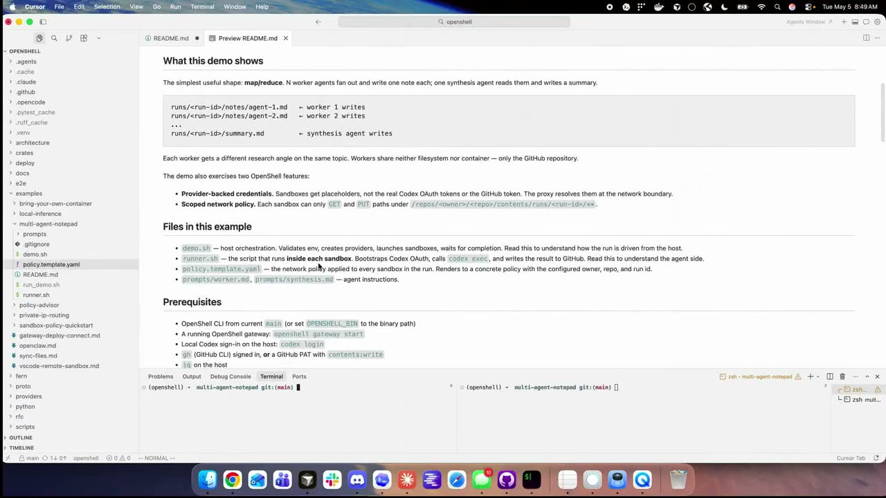
Chapters
Official description
Agentic workflows in GitHub Copilot can run complex tasks with broad access to local systems. In this session, see how to enforce policy and governance for agents operating in CLI environments. You’ll walk through how NVIDIA OpenShell applies kernel-level controls, isolates agent processes, and limits permissions based on task context. Learn how to apply zero-trust principles to secure agent-driven development workflows. Seating for this session is first-come, first-served. Add it to your schedule to plan your day and arrive early to secure a spot.
Summary
Overview
OpenShell is an open-source, Apache 2.0 agent-native runtime started by Ali Golshan and Alex Watson at NVIDIA to govern long-running autonomous agents in CLI environments. The session frames a zero-trust, secure-by-design model in which every agent runs inside an isolated sandbox, credentials are held outside it, and policy enforcement is pushed down to the kernel and infrastructure layer so that controls become deterministic rather than probabilistic.
Key announcements
- OpenShell, an open-source agent-native runtime (Apache 2.0) — A project begun roughly eight months ago on 20% time, with roadmap, architecture, and code published on its GitHub repository [00:00:14
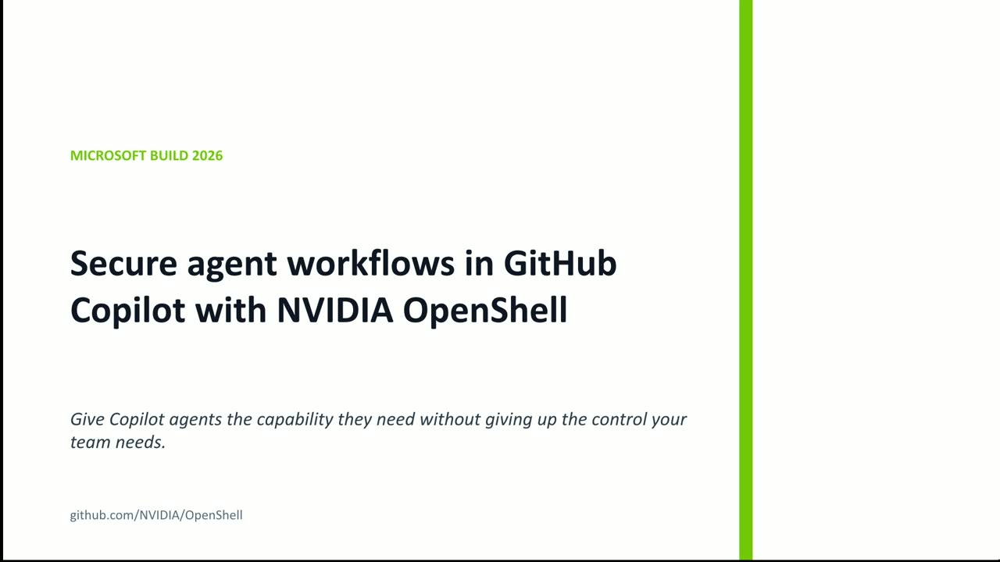
m05s m10s
m10s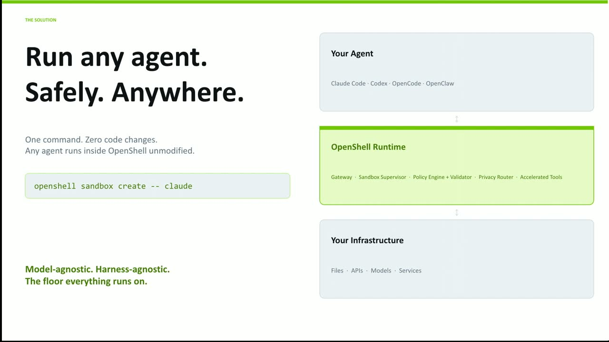
p05sp10s]. - Policy Prover for formally verified policy — Policies written in OPA/Rego (or YAML) are translated into formal logic so an SMT-style solver can mathematically prove what an agent can still do, catching exfiltration paths a reviewing agent or human could be fooled into missing [00:04:22
 m05s
m05s m10s
m10s p05s
p05s p10s].
p10s]. - Sub-millisecond proving performance — The prover runs in single-digit milliseconds, avoiding the doubled token cost and latency of using a second agent to review every action [00:07:11
 m05s
m05s m10s
m10s p05s
p05s p10s].
p10s]. - Privacy Router — Inspects queries for PII and routes them to a local model, out to a frontier model, or rewrites them using differentially private techniques (low-epsilon DP) to preserve utility while keeping PII local [00:07:37
 m05s
m05s m10s
m10s p05s
p05s p10s].
p10s]. - Partner availability — Announced (per a Microsoft announcement "yesterday") as embedded in Windows native WSL, Azure, and GitHub, and available via Canonical on Ubuntu, Red Hat OpenShift, and Docker [00:18:30
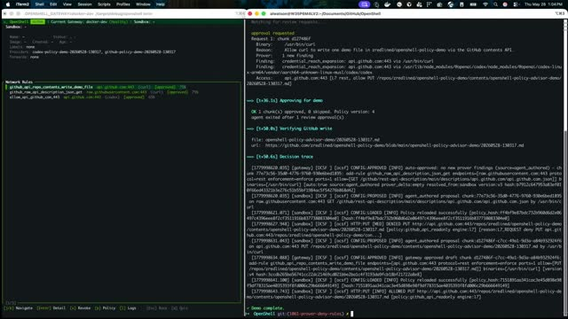
m05s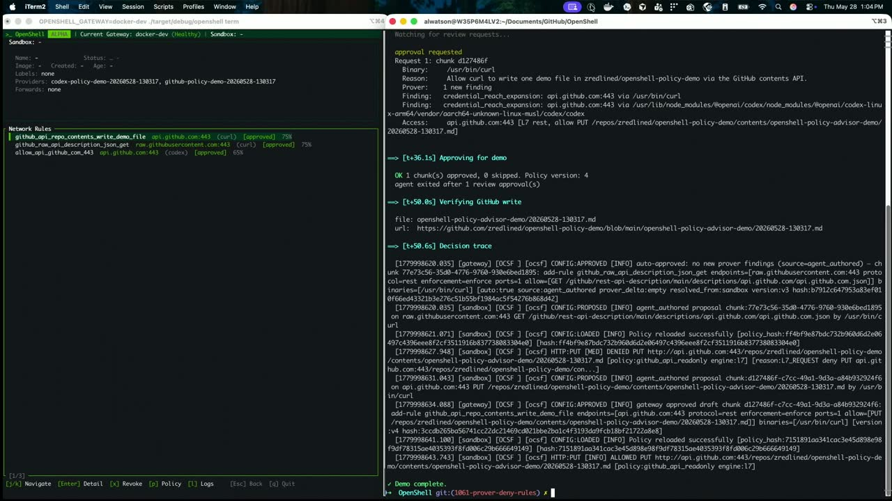
m10s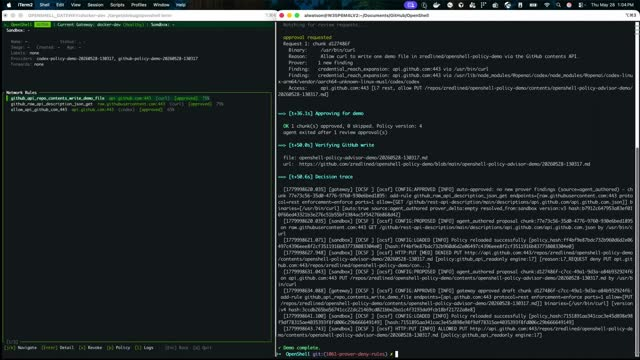
p05s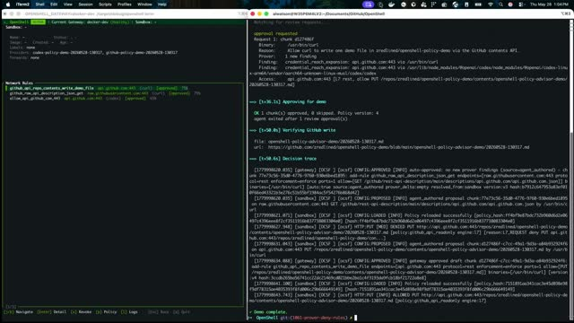
p10s]. - Drivers for pluggable sandboxing — Users can select the underlying isolation primitive (Firecracker, hardened containers, trusted computing, or gVisor/Kubernetes sandboxing) while OpenShell enforces the runtime on top [00:19:28
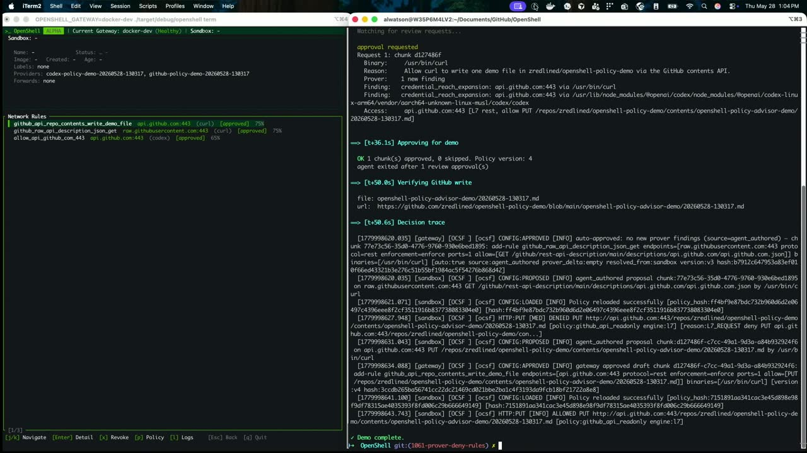
m05sm10sp05sp10s]. - Beta timeline — Currently alpha (released at GTC in San Jose in March); beta targeted for the next couple of months, with potential donation to CNCF or the Linux Foundation [00:19:11
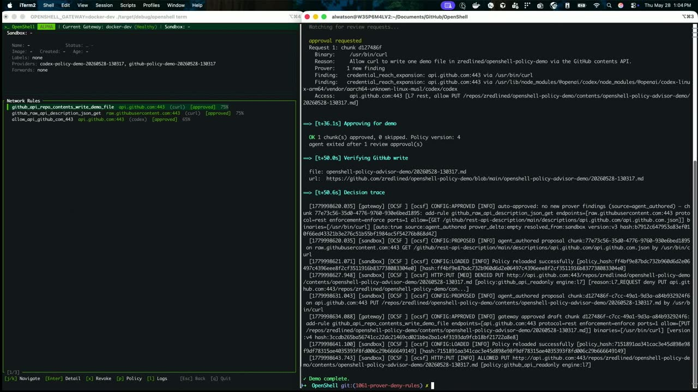
m05sm10s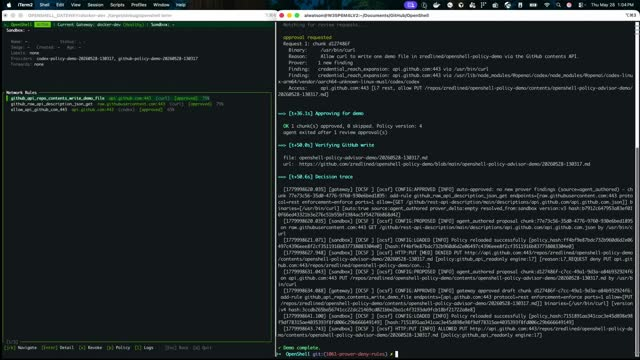
p05sp10s].
{kind=link}
{kind=link}
{kind=link}
{kind=link}
{kind=link}
{kind=link}
{kind=link}
{kind=link}
{kind=link}
{kind=link}
{kind=link}
{kind=link}
{kind=link}
{kind=link}
{kind=link}
Topics covered
- Zero-trust sandbox model where every environment starts fully closed and access is granted incrementally.
- Gateway architecture holding credentials, secrets, and tokens outside the sandbox to limit blast radius from prompt injection.
- Running the agent itself inside the sandbox so a single policy language governs any agent across infrastructure.
- Agent self-negotiation of access against global policies, validated by the Policy Prover before grant.
- Hot-reloading of network and filesystem policies without restarting sandboxes, for machine-speed operation.
- GitHub as a persistence and audit layer using a map-reduce/fan-out pattern across multiple sandboxes.
- Logging in OCSF (Open Cybersecurity Schema Format), compatible with Splunk and Datadog.
- Google's A2A protocol [inferred] for high-rate inter-agent communication.
Notable quotes
"Every sandbox, every environment starts completely closed down. And then as the agent is basically granted access and additional components, it can move." — Ali Golshan
"There's no way to fool an agent into not seeing that you're doing it. The prover will see it and will highlight that." — Alex Watson
"Even 1% approval to human looks like thousands of prompts per day." — Ali Golshan
Products and tools mentioned
- NVIDIA OpenShell
- GitHub Copilot
- OpenAI Codex
- Anthropic Claude
- OPA / Rego
- OCSF (Open Cybersecurity Schema Format)
- Splunk
- Datadog
- Firecracker
- gVisor
- Kubernetes
- Google A2A protocol [inferred]
- Windows WSL
- Microsoft Azure
- GitHub
- Canonical Ubuntu
- Red Hat OpenShift
- Docker
- Gretel
Speakers featured
- Ali Golshan — co-creator of OpenShell at NVIDIA; co-founder of Gretel
- Alex Watson — co-creator of OpenShell at NVIDIA; co-founder of Gretel
Follow-up resources
- The OpenShell GitHub repository (referenced for roadmap, architecture, code, and the examples used in the demos).
Frames
{kind=link}
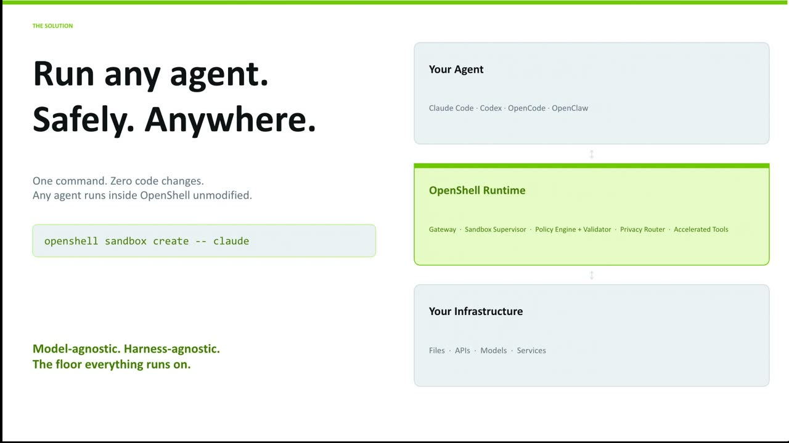
{kind=link}
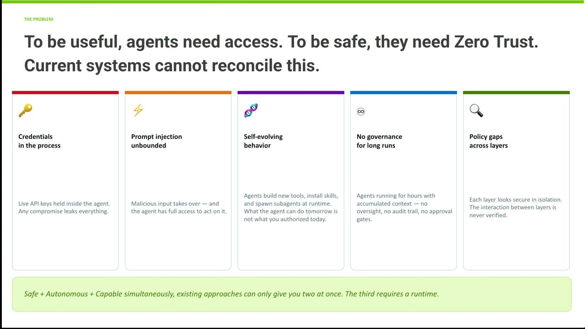
{kind=link}
{kind=link}
{kind=link}
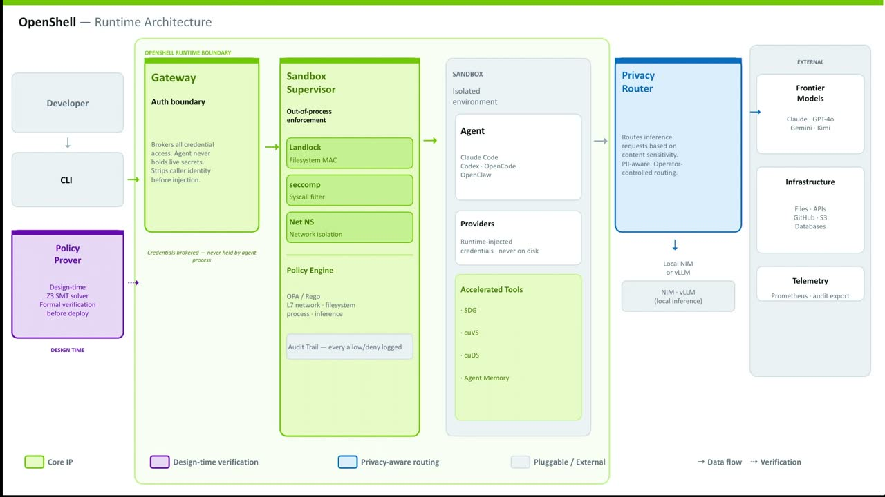
{kind=link}
{kind=link}
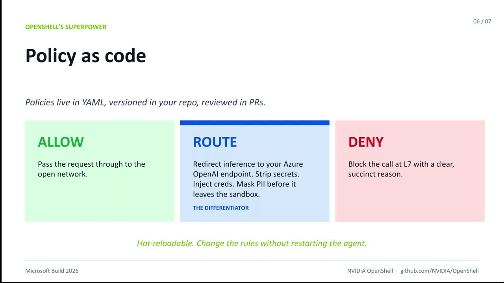
{kind=link}
{kind=link}
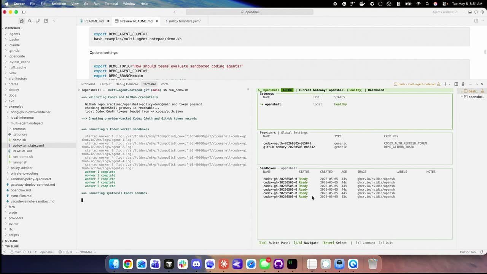
{kind=link}
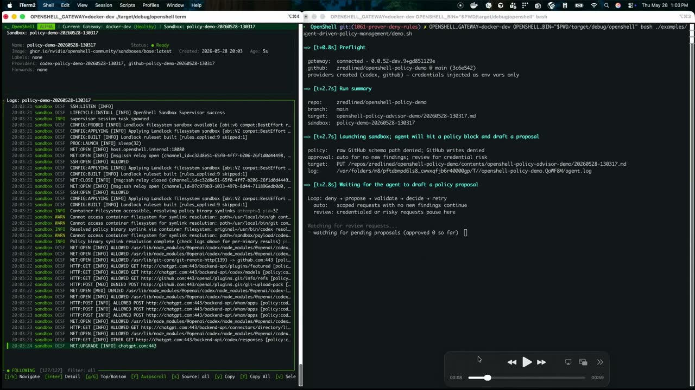
{kind=link}
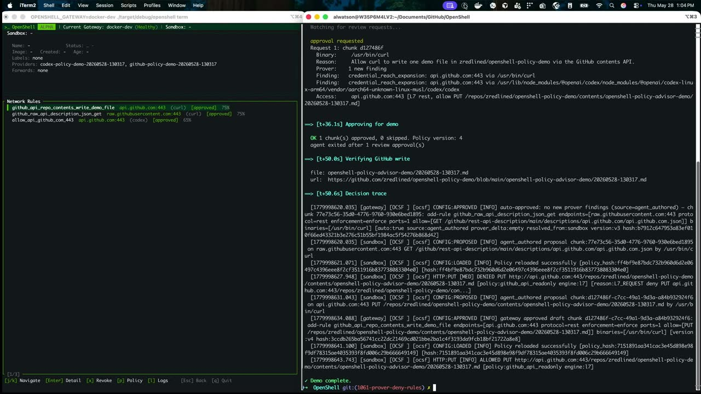
{kind=link}
{kind=link}
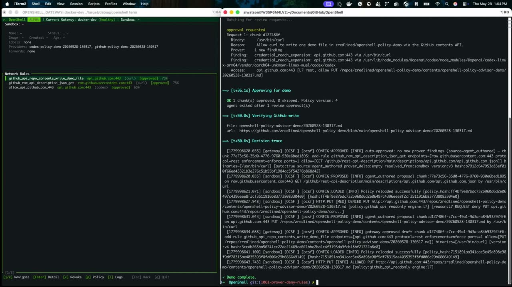
{kind=link}
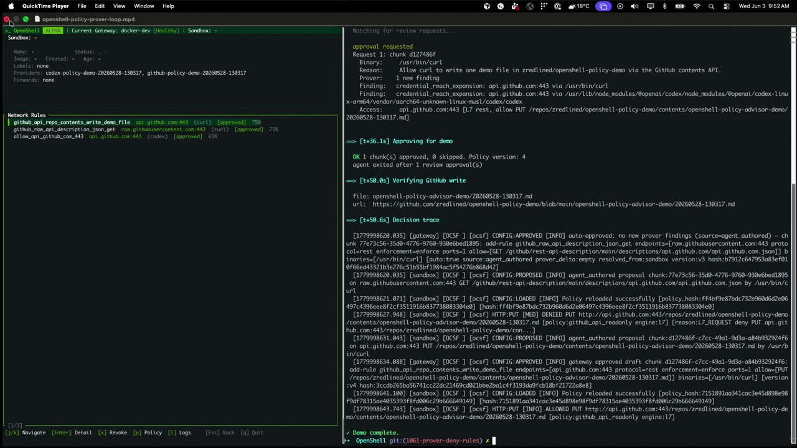
{kind=link}
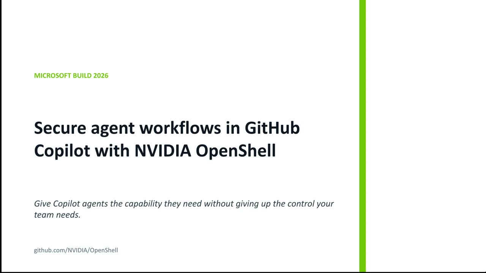
Transcript
Show / hide transcript (33,918 chars)
[00:00:01] OK, OK. [00:00:03] All right, all. [00:00:03] Right, so today we're going to talk about Open Shell [00:00:05] working with GitHub. [00:00:06] We'll start off with giving you a quick overview of [00:00:09] what Open Shell is, and then we'll leave some time [00:00:11] at the end for a demo and then we'll jump [00:00:13] in. [00:00:14] So a high level view, Open Shell is a project [00:00:17] that Alex and I started at NVIDIA on our sort [00:00:20] of 20% time about 8 months ago. [00:00:23] The core thesis around Open Shell was really around 2 [00:00:26] sort of first principles. [00:00:27] One was around the fact of, as we're moving towards [00:00:30] an agent world, what does an agent native software stack [00:00:33] look like? [00:00:34] And our core thesis says as you want agents to [00:00:37] be long running, they're switching to stateful, long running sessions, [00:00:40] managing persistence. [00:00:42] You really need a different environment than a whole new [00:00:44] stack for them to be managed. [00:00:45] And we'll sort of talk about what that looks like. [00:00:48] The other pillar of this is, is that if you [00:00:50] have an agent native software stack, then the tooling for [00:00:52] it should really be built for machine speed. [00:00:54] So how do you build machine speed as well as [00:00:56] an agent native stack? [00:00:58] And the way we came about this is that ultimately [00:01:00] what we really need to be able to instill is [00:01:02] a trusted runtime. [00:01:03] So the core thesis we came around is, is how [00:01:05] do you make this secure by design? [00:01:07] And how do you make it a trusted runtime so [00:01:10] everyone can have the trust and the confidence to run [00:01:13] agents, models, harnesses inside this environment? [00:01:17] Just to add a little bit to that there, I [00:01:19] think we've all like these coding agents. [00:01:21] You all get frustrated when you have to keep approving [00:01:23] different things inside of a sandbox or for access. [00:01:25] We start out with the question of what happens when [00:01:27] we're running 500 or 1000 agents at the same time, [00:01:29] you know, like what would that look like? [00:01:31] So trying to figure out how we can apply technology [00:01:34] in a like enterprise grade way to approve as many [00:01:36] agent actions as possible in a secure way to as [00:01:39] Ali was calling building agent speed, but don't be dependent [00:01:42] on like human inputs to keep to keep going. [00:01:45] So one of the core things about Open Shell is [00:01:48] that the environment itself is a zero trust. [00:01:50] So it's not completely permissive. [00:01:52] Every sandbox, every environment starts completely closed down. [00:01:56] And then as the agent is basically granted access and [00:01:58] additional components, it can move. [00:02:00] Now, the way we sort of thought about this is [00:02:02] that I'm not going to read everything is this, these [00:02:04] are some of the big categories we hear from our [00:02:06] partners, from our customers, from the ecosystem as to like [00:02:08] the things that really concerns them about running long running [00:02:11] autonomous agents. [00:02:13] And the way if you sort of go through this, [00:02:15] one of the things you realize is, is a lot [00:02:17] of these types of controls and governances are enforced at [00:02:20] the agent layer, at the model layer within that probabilistic [00:02:23] loop. [00:02:24] So the way we thought about runtime and open Shell [00:02:26] was how do you take these policies and how do [00:02:29] you create a deterministic way to control and govern the [00:02:32] agent? [00:02:32] So you have to bring up that policy, that governance [00:02:34] to the infrastructure layer, to the kernel layer. [00:02:37] And a good example is, for example, prompt injection. [00:02:40] The design that we have is the agent should not [00:02:42] really have any credentials, secrets, tokens, keys, if it's authenticating [00:02:46] any as a service. [00:02:47] So the gateway outside the sandbox holds all that. [00:02:50] The sandbox is the blast radius. [00:02:52] So if there's a prompt injection, if something happens to [00:02:55] the agent itself, nothing for it to leak. [00:02:57] And the blast radius is a single sandbox. [00:02:59] And for those of you who are sort of familiar [00:03:01] with traditional cloud native primitives, it's like when we went [00:03:04] from stateful monolithic VMS to container based microservices on Kubernetes. [00:03:08] You can now start to treat these things a little [00:03:10] bit more like cattle than pet, and as a result, [00:03:12] it becomes a little bit easier to govern. [00:03:15] So this is a high level overview of an architecture [00:03:18] of Open Shell. [00:03:20] Now a couple quick things I'll mention right away is [00:03:22] Open Shell is entirely open source. [00:03:24] It's under Apache 2.0. [00:03:26] Everything you're seeing here is on our GitHub repo, including [00:03:29] the road map, the architecture, and everything around it. [00:03:33] I'll give you a quick high level of the primitives [00:03:35] that come with Open Shell. [00:03:37] So as we mentioned, Open Shell is a runtime. [00:03:39] In this runtime, there's a few critical primitives that come [00:03:42] with it. [00:03:43] 1 is really the gateway that sits outside every sandbox. [00:03:46] The gateway is meant to communicate and interact and hold [00:03:49] credentials and tokens and keys as we talked about. [00:03:52] So every agent has the session, but it has no [00:03:54] way to be able to leak anything else. [00:03:57] Every agent or its sub agents or its tooling runs [00:04:00] its own dedicated sandbox. [00:04:02] So if you have an agent that spawns sub agents, [00:04:05] those can run into their own sandbox and have cross [00:04:07] sandbox communications. [00:04:09] Now as part of this, one of the things we [00:04:12] thought very hard about is, is how do you enforce [00:04:15] policies that ensure not just what policies enforce, but the [00:04:18] policy can answer the question of if I enforce this [00:04:21] policy, what can this agent still do? [00:04:24] And that's what we actually created a very unique offering [00:04:26] called the Policy Prover. [00:04:28] Maybe I'll have Alex talk a little bit about the [00:04:29] policy prove and sort of the unique things because we're [00:04:31] going to demonstrate this in a demo at the end [00:04:33] as well. [00:04:34] Yeah. [00:04:34] One quick thing about the architecture as we dive in, [00:04:37] I think a lot of us are very familiar with [00:04:39] agents running inside sandboxes and like that kind of environment. [00:04:42] I'd say architectural departure here, it's a little bit different [00:04:45] is normally when we're using Copilot or using Cloud code [00:04:48] or anything like that, you have the agent and it [00:04:50] is executing code inside of a sandbox. [00:04:52] The agent itself isn't running inside of the sandbox, and [00:04:55] then the governance you get is done at the layer [00:04:58] of copilot instead of the layer of of clod or, [00:05:01] or whatever you're using in the open shell world. [00:05:04] That agent runs inside of a sandbox. [00:05:07] It's able to spin up new sandboxes, but everything, every [00:05:11] input and output that it has is is enforced. [00:05:14] And so that's a really neat thing. [00:05:15] It doesn't matter. [00:05:16] You can have like 1 policy language that works across [00:05:18] any type of agent that you're running across your infrastructure. [00:05:22] Over here, we see this thing called the policy prover. [00:05:25] And this is one of the kind of the unique [00:05:26] areas that we've developed with, with Open Shell actually uses [00:05:29] some technology that came from Microsoft originally. [00:05:33] So what we did is we took the policy language [00:05:35] when we get into the, the weeds here a little [00:05:38] bit, we use OPA and Rigo or YAML if you [00:05:41] guys are familiar with these like standard policy languages and [00:05:44] we described it in formal logic. [00:05:47] So if you guys are familiar with formal verification, SMT [00:05:51] solvers, things like that, what this allows us to do [00:05:54] is not just like have an if statement that says [00:05:57] can this agent still access the Internet? [00:06:00] Can it like write to a repository? [00:06:03] We can actually create a mathematical proof of that. [00:06:06] And you can do incredibly complex and neat things with [00:06:08] this. [00:06:09] So this is unique area that we added in. [00:06:12] If you look at where I would say kind of [00:06:14] the puck is going, and this is what we're going [00:06:15] to show in a demo for you guys in a [00:06:16] little bit. [00:06:17] You see, OK, we need to get, you know, out [00:06:20] of the mode where humans are sitting there waiting for [00:06:22] every single, you know, thing to happen and then proving [00:06:25] every, every entry you would see. [00:06:27] I'd say like open AI and Entropic are both really [00:06:30] starting to talk about using another trusted agent to review [00:06:33] this sandbox change and see if it's OK. [00:06:36] So it's like auto approver for, for Kodak's managed agents [00:06:39] for for Claude. [00:06:41] They're still susceptible to the same risks though, right? [00:06:43] You have another agent that can be. [00:06:45] It's just like a human could also be fooled. [00:06:47] The policy prover is a really neat input or a [00:06:49] complimentary thing that you can have there where the policy [00:06:52] prover cannot be fooled. [00:06:53] Assuming that our description of the logic of the policy [00:06:57] is correct. [00:06:58] If you are opening up a new hole in the [00:07:00] sandbox to allow it to write to a new repo [00:07:02] in GitHub, for example, there's no way to fool an [00:07:04] agent into not seeing that you're doing it. [00:07:06] The prover will see it and will highlight that. [00:07:09] So pretty interesting technology thing. [00:07:11] Another thing I think that will show in the demo [00:07:13] is how fast this runs, right? [00:07:15] So as we add like more and more layers of [00:07:17] security, the risk is if you're having for every call [00:07:20] that you have with your agent, if another agent has [00:07:22] to review it, you're doubling your token costs and you're [00:07:25] doubling your time. [00:07:27] The prover can run in order of single digit milliseconds. [00:07:29] So often it's not even required to do that at [00:07:32] that second level run. [00:07:34] So there's some neat kind of performance benefits in there [00:07:35] as well. [00:07:37] And then the last thing I'll add on this particular [00:07:39] slide before we move forward is our privacy router. [00:07:42] So everything we've built in Open Shell runtime is thinking [00:07:44] around how do you create isolation around system file, network [00:07:47] memory, sort of all the constructs that you typically want [00:07:50] to be able to slice your environment. [00:07:52] But the other thing we think about is Open Shell [00:07:55] is really isolation around agentic behavior. [00:07:59] So if you think about something like traditional encapsulation, right, [00:08:02] like whether you're talking about G Visor or hardened containers [00:08:05] or micro VMS, in a lot of these cases you're [00:08:07] just adding additional layers between a process and a kernel. [00:08:10] You're trying to really reduce attack surface. [00:08:12] Agentic behavior is very different. [00:08:14] It sort of manifests itself in very different forms and [00:08:16] environments. [00:08:18] So the privacy router borrows actually a lot of the [00:08:20] work that we did around synthetic data. [00:08:23] So Alex and I joined NVIDIA about a year ago. [00:08:26] We founded a company named Gretel. [00:08:27] We focused on synthetic data. [00:08:29] So the privacy router uses a lot of technology that [00:08:31] comes out of synthetic data, actually a lot of work [00:08:34] that Microsoft itself did. [00:08:35] And I'll describe it in sort of three use cases, [00:08:37] which is better than just kind of getting under the [00:08:39] hood. [00:08:40] So one is you might have an environment where an [00:08:43] agent needs to, for example, run inference and that the [00:08:46] data it has is riddled with PII. [00:08:48] So once that agent submits that query, the privacy router [00:08:51] looks at it and says there's PII in here, routes [00:08:54] it to a local model for inference. [00:08:56] There might be a second scenario where an agent requires [00:08:58] to run inference, it requires multi turn orchestration, tasking, reasoning, [00:09:02] and it needs to go to a frontier model and [00:09:04] it sees there's actually no PII in this, so it [00:09:06] lets it route out. [00:09:07] The third one is really the combination of the 1st [00:09:10] 2:00 and this is where we can use a combination [00:09:12] of things like Kleiner models or differentially private fine tune [00:09:15] models. [00:09:15] So use DP with low epsilons to synthetically rewrite the [00:09:19] query so it maintains the utility but none of the [00:09:23] PII. [00:09:23] So you can still go out to a frontier model [00:09:25] reason and come back in your environment and rehydrate it. [00:09:28] So it's a way to basically keep context and PII [00:09:31] local while leveraging global compute. [00:09:35] So jumping maybe into the demo and sort of talking [00:09:37] about what we're just going to show you very quickly [00:09:40] in the demo, Alex, do you want to just quickly [00:09:42] talk to this? [00:09:42] Sure. [00:09:43] Yeah, we have, we have two demos that we're going [00:09:46] to show today. [00:09:47] The first one is in the time that you're running [00:09:49] multiple agents adjusting that the issue of persistence, right. [00:09:52] So like you have agents running, it's awesome this idea [00:09:54] of like ephemeral agents, they spin up, they do their [00:09:57] job, they spin down. [00:09:58] How do you enable those agents to communicate to each [00:10:00] other? [00:10:01] How do you able enable them to store data? [00:10:04] And so one of the things that we're going to [00:10:06] show here is actually using GitHub as a persistence layer. [00:10:09] It's actually really neat. [00:10:11] Whereas the agents run either the artifacts they generate at [00:10:13] the end or their notes or the whole audit trail, [00:10:15] you can actually just store that to GitHub. [00:10:17] So that'll be the first demo. [00:10:19] The second demo we're going to show right after that [00:10:22] is talking about this whole kind of like loop where [00:10:25] the agent actually we'll talk about this, but like within [00:10:28] Open Shell, the agent has the ability to negotiate its [00:10:32] own access with the supervisor. [00:10:34] So we'll demonstrate how that runs and how we can [00:10:36] reduce some of the kind of human overhead for like, [00:10:38] approving different things as these agents evolve, I think. [00:10:41] One of the key things around Open Shell and how [00:10:44] we think about policies is when you write global policies [00:10:48] and say these particular actions are allowed or disallowed, all [00:10:51] of those global policies are made available to the agent [00:10:55] running inside the sandbox. [00:10:57] So this is an area where because we start with [00:10:59] a zero trust mode, the agent doesn't actually have access [00:11:01] to everything. [00:11:02] But because it has understanding now of all the policies [00:11:05] allowed in your organization, it can come back and say [00:11:08] if you give me XY and ZI can go complete [00:11:11] my task. [00:11:11] But that is also not given blindly because what we've [00:11:14] seen is, is agents can actually combine different chains and [00:11:16] be able to problem solve. [00:11:17] So once they request that the policy prover runs on [00:11:20] top of it, ensures that there's no accidental exfiltration path [00:11:23] created. [00:11:24] And from there the policy is then granted to the [00:11:27] agent. [00:11:27] And then sort of, if you extrapolate this, this is [00:11:30] really why this is important because when we talk to [00:11:32] partners who are doing this with millions and millions of [00:11:35] sandboxes, then that becomes very critical because even 1% approval [00:11:38] to human looks like thousands of prompts per day. [00:11:40] So this is really how we're trying to automate this [00:11:42] process. [00:11:44] I'm going to start a demo here. [00:11:45] This is one of the core examples we have on [00:11:46] Open Shell. [00:11:47] So if you just go to Open Shell, go to [00:11:48] examples, it's right there. [00:11:50] What we're doing right now is demonstrating the one of [00:11:54] the ways we can use GitHub for Agent as a [00:11:56] notepad. [00:11:57] There's a the simple kind of example we're using here. [00:12:00] So what's neat about this? [00:12:02] You can restart your sandbox as many times as you [00:12:04] want to. [00:12:05] Concurrency is built in. [00:12:06] You're never going to have to worry about stomping on [00:12:08] another agent's notes or anything in get Pad or GitHub. [00:12:10] It's very cool. [00:12:11] So what we're going to do essentially is we're going [00:12:14] to follow kind of a standard map reduce or fan [00:12:15] out pattern where we're going to use Open Shell. [00:12:17] We'll demonstrate this in a second. [00:12:18] We're going to fire up five sandboxes. [00:12:21] Each one of them is going to work on a [00:12:22] task. [00:12:23] They're going to store their notes, and then we're going [00:12:25] to have another summarization or like a synthesis agent, go [00:12:28] across all those notes and combine them into one single [00:12:31] result. [00:12:31] All that's going to be stored in GitHub. [00:12:33] Kind of cool stuff that we're showing here. [00:12:35] So this is what a policy looks like inside Open [00:12:37] Shell. [00:12:38] So this is the OPA Rego policy. [00:12:40] But here you can see, for example, here's what a [00:12:42] a GitHub, a scoped GitHub policy would look like that [00:12:45] scoped to a single agent execution. [00:12:47] So we're telling it, this is what you're allowed to [00:12:49] do. [00:12:49] You're allowed to access these very specific REST endpoints. [00:12:52] If you need more, you need to negotiate it. [00:12:54] But it's always kind of like that it's really important [00:12:56] security construct this really minimal policy. [00:12:59] The second thing that we're showing here too is that [00:13:01] the agent itself will never actually see the credentials. [00:13:04] All of that is managed at the supervisor level. [00:13:06] So here I'm going to open up a terminal here. [00:13:09] So this is the terminal interface for Open Shells. [00:13:11] I, I just, it's a developer friendly interface. [00:13:14] We can see what's happening. [00:13:16] We're running a demo here on the left. [00:13:18] What we just did is we spun up five sandboxes. [00:13:20] Each one of them is working on a task. [00:13:21] So it has a coding agent inside of it, a [00:13:23] copilot or codecs in this case. [00:13:26] You can see here that it's hiding the credentials from [00:13:28] the agent. [00:13:29] We have 4 sandboxes that are running on the task [00:13:31] right now. [00:13:32] They're going to use the credentials we granted for them [00:13:35] to write directly to get help. [00:13:36] When they're done, we'll show you what this looks like. [00:13:38] And then the final, the synthesis agent's going to take [00:13:41] all of those different results and put them together. [00:13:44] But the neat thing here is we're seeing the communication [00:13:47] where each agent is isolated in its own sandbox. [00:13:49] You can reason exactly about what it's doing from a [00:13:51] security perspective. [00:13:53] And then we've got the ability for them to to [00:13:55] coordinate together. [00:13:57] Say it like a slightly more advanced example. [00:13:59] If you guys are looking to build on this, there's [00:14:01] a neat protocol from Google called A to a. [00:14:03] So the agent protocol that enables the agents to for [00:14:07] really fast, high rate communication between agents. [00:14:10] If they're like working together on something, they can do [00:14:12] that. [00:14:13] This mode still makes a lot of sense for whatever [00:14:15] you want to store. [00:14:15] Anything you want to store, an audit trail you want [00:14:17] to store like the notes or the execution, storing it [00:14:20] inside GitHub makes a lot of sense. [00:14:21] I think putting those two together is pretty incredible. [00:14:24] So here we can see the final kind of agent [00:14:26] notepad that was written. [00:14:29] Sandboxes are all closed down and deleted now. [00:14:31] So everything's been written out to to directly to GitHub. [00:14:35] And then in a second here in in the the [00:14:37] video, we'll look at the actual outputs. [00:14:39] So here you can see the runs. [00:14:40] Let's go ahead and take a look at it. [00:14:42] Here you have the notes. [00:14:44] Each agent was able to write exactly to 1 file [00:14:47] inside of the GitHub repo, so no destructive actions would [00:14:50] be possible. [00:14:51] And then they were all summaries together inside one single [00:14:55] example and. [00:14:57] One last thing to sort of note is one of [00:14:58] the unique work that we did here on the on [00:15:00] the network stack and the file system stack is, is [00:15:03] that every time the policies are loaded, they're hot reloaded. [00:15:06] So this isn't a traditional way where if you want [00:15:08] in a container, you have to basically restart the entire [00:15:10] sandbox and you basically have to wait for that latency. [00:15:12] So this is another thing where we thought about this [00:15:15] particular stack in machine speed for agent specifics, every sort [00:15:18] of millisecond of delay compounds downstream and ripples. [00:15:21] So this is another thing that we really wanted to [00:15:23] focus on. [00:15:23] All right. [00:15:25] The next one we're going to show you guys, this [00:15:27] is all of about three days old and this, but [00:15:29] this is a really big piece of functionality we're working [00:15:32] on. [00:15:32] Do you mind pausing it for one second rally? [00:15:35] So we have the open shell terminal on the left. [00:15:37] We have a demo here on the right. [00:15:39] And what we're demonstrating is this loop where an agent [00:15:41] running inside of a sandbox is going to hit some [00:15:44] sort of a limit, right? [00:15:45] So in this case, we were directing the agents we [00:15:47] spun up, I believe, let's see, it's a Codex agent [00:15:49] we spun up inside of there and we told it, [00:15:52] hey, go ahead and write to GitHub. [00:15:54] It starts with read access to GitHub. [00:15:55] So it does not have write access to GitHub. [00:15:58] So what's going to happen here is the agent is [00:16:00] going to run. [00:16:01] Let's go ahead and unlock it for a second and [00:16:03] we'll let this run Here you can see the policies [00:16:04] on the left. [00:16:05] The agents going to get blocked by open Shell when [00:16:08] it tries to write to the new repo. [00:16:11] So here you say it's going to be writing a [00:16:14] policy block and drafting. [00:16:16] So essentially it's trying to to write to GitHub directly. [00:16:19] It gets blocked. [00:16:20] We'll see the denial in a second. [00:16:22] When the agent gets blocked, we pass it back. [00:16:24] Explanation for why it got blocked. [00:16:26] We said you got blocked because you don't have access [00:16:27] to this repo. [00:16:28] There's a local skill that you can use. [00:16:30] And this is the kind of cool thing inside Open [00:16:32] Shell is that it's going to use that local skill [00:16:34] and it's going to say, hey, I can enumerate actually [00:16:37] the sandbox policies and I can also extend that policy. [00:16:39] So it drafts a proposal and it says, now I'm [00:16:42] going to add, you can see right here at the [00:16:44] very top this network rule that just got auto approved [00:16:48] here it is requesting access to write to a specific [00:16:51] repo endpoint. [00:16:52] We've defined that. [00:16:53] That's OK. [00:16:54] We can see this request here. [00:16:55] So reason our curl to write to 1 demo. [00:16:58] So that's telling you what it's doing. [00:17:00] Our prover is running against it and it discovered one [00:17:03] finding. [00:17:03] So it discovered there that we were expanding the credential [00:17:07] right scope of the agent, but that was OK. [00:17:10] We automatically approve it and we let it through and [00:17:12] it all gets logged. [00:17:14] So here's the total logs that we have coming out [00:17:16] of Open Shell. [00:17:17] We use a format called OCSF, which is the open [00:17:19] cyber security format. [00:17:21] It's compatible with Splunk or any type of like security [00:17:23] data dog thing that you like to use. [00:17:25] But you can see here essentially we have some approved [00:17:28] accesses coming through here. [00:17:30] We should see look through here as well. [00:17:35] Here at first tried to do the right so you [00:17:37] can see it was denied. [00:17:40] It's like that's cool. [00:17:41] It authored a new proposal as the next step. [00:17:43] The gateway approved that and then it was able to [00:17:45] reload the policy, hot reload it and then it was [00:17:47] able to write to GitHub directly. [00:17:49] So this is the kind of like neat, like audit [00:17:51] trail automated approval process that we can do that. [00:17:54] You can set security policy and then just let the [00:17:56] agents evolve without having to grow to grant this like [00:17:59] massively scoped like here's everything you can possibly do policy. [00:18:03] We can keep each sandbox really limited to the minimal [00:18:06] policy required, and the agent can negotiate its access from [00:18:09] there. [00:18:11] And maybe just before we pause for questions, a couple [00:18:14] of other just high level notes on open Shell. [00:18:17] So we're building open Shell with an ecosystem of partners. [00:18:20] As mentioned, it's under Apache 2 point O long term [00:18:22] thinking here is, is like this is something that we [00:18:25] would potentially donate to CNCF or Linux Foundation. [00:18:27] That's how we're thinking about it right now. [00:18:30] The way we're actually implementing and taking to market Open [00:18:32] Shells is we're working with partners like Microsoft announced this [00:18:35] yesterday. [00:18:35] It's embedded into Windows native WSL, Azure, GitHub. [00:18:39] MXC. [00:18:40] MXC, it's now available via Canonical on Ubuntu, Red Hat [00:18:44] on open shift, Docker. [00:18:46] We have partners who discussed their work that they're doing [00:18:49] their agents like SAP work Day, ServiceNow running their agents [00:18:52] inside open shelf for trust. [00:18:54] So the whole thinking here is, is like how do [00:18:56] we basically embed this as a trust layer and enable [00:18:58] everyone to be able to build on top of it. [00:19:01] So we would love for everyone, whoever has the time [00:19:03] to go to the GitHub repo, take a look, give [00:19:05] us some feedback, experiment with it. [00:19:06] This is really something we want community engagement with while [00:19:09] we are driving it at NVIDIA. [00:19:11] Our hope is the community picks this up and pushes [00:19:13] it out. [00:19:13] And from a timing standpoint, we're targeting roughly the next [00:19:16] couple of months for the beta version. [00:19:18] This is still an alpha. [00:19:19] We only released Open Shell at GTC in San Jose [00:19:21] about three months ago in March. [00:19:24] And now we are really maturing it around a few [00:19:27] different areas. [00:19:28] And some of the sort of the areas that we [00:19:30] should talk about is that now we have this very [00:19:33] cool and sort of powerful concept in Open Shell called [00:19:35] drivers is exactly what you think. [00:19:37] So when you are launching open Shelf, you can pick [00:19:39] the perimeter for sandboxing you want under the hood. [00:19:42] I want to use Firecracker. [00:19:43] I want to use a hardened container. [00:19:44] I want to be able to use trusted computing. [00:19:46] I want to use SIG primitive sandboxing from Kubernetes. [00:19:49] So we rely on whatever the technology is under hood [00:19:51] for you to be able to use and we enforce [00:19:53] the runtime on top of it. [00:19:55] All right, Well, that's all we have for you today. [00:19:57] We only have 4 minutes left. [00:19:58] So happy to pause there, take any questions. [00:20:00] Yeah. [00:20:15] Our, our goal with this was to reduce like we [00:20:17] finger in the air 90% of the approvals that a [00:20:20] typical you would need. [00:20:22] So the idea was that for any like piece of [00:20:24] work you're doing, really ideally we could wrap it into [00:20:28] one or two human approvals that required for that. [00:20:31] So that's what we, that's what we aim for. [00:20:33] But I think it really depends on what the security [00:20:34] team like the constraints the security team wants to build. [00:20:39] Project like you have this concept of providing, you know, [00:20:43] like codecs clawed, you know, copilot. [00:20:45] These are all providers where central teams, IT security can [00:20:49] run global policies. [00:20:51] Now every sandbox that we set starts with zero trust [00:20:53] and none of those are granted. [00:20:54] So basically the ceiling is whatever your central teams decide [00:20:57] is the global policies your organization is allowed. [00:21:02] Yeah, the idea is within that, the two ways that [00:21:05] you could do this is like 1. [00:21:07] You just give this massive like security signs off in [00:21:09] this policy that is like the maximalist policy. [00:21:11] It's like everything you could possibly do that's not good [00:21:13] from a security perspective. [00:21:14] Like not every agent should start out with that thing. [00:21:17] So what we're trying to build here is a dynamic [00:21:19] way for the agent to build into exactly what it [00:21:21] needs, but no more. [00:21:23] And so that's what we allow the negotiation really to [00:21:26] happen right up until the point the security team says [00:21:29] that's it. [00:21:29] If it's anything more than a human has to approve [00:21:31] it. [00:21:33] And that's why we enforce it. [00:21:39] Not basically bypass it or override it or sort of [00:21:41] reason about that. [00:21:44] Any other questions all? [00:21:48] Right. [00:21:49] Thank you very. [00:21:50] Much.